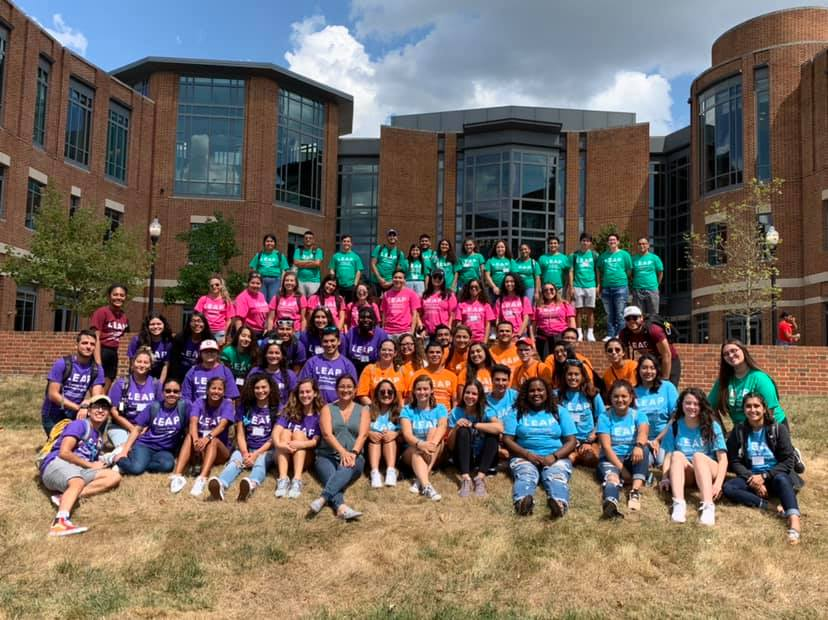

St. Louis Science Center
Volunteer, Physical Sciences Gallery
May 2017 - July 2018
St. Louis, MO
I performed Amazing Science Demonstrations about electricity or thermal physics for up to 100 visitors at a time. I worked with liquid nitrogen and operated plasma globes, Van de Graaff generators, and Tesla coils. Additionally, I facilitated interactive demos on light, magnetism, and nanotechnology for up to 5 visitors at a time.
Astronomy on Tap
Presenter
July 2022
Urbana, IL
I presented a public talk, "Sick Burn: The Story Behind Your Sizzling Summer Nightmare". I educated listeners about sunburns from a physical science context. I defined the types of UV radiation, discussed environmental factors of sun exposure, and explained the protective role of the atmosphere, magnetosphere, and heliosphere.

OSU Astronomical Society
President
May 2017 - May 2019
Columbus, OH
I equipped 1500 Central Ohioans with glasses and manuals to safely view the solar eclipse on August 21, 2017. In February 2018 and 2019, I planned an educational trip to the Green Bank Observatory for 35 undergraduate students.
During my tenure, I hosted 8 "star parties" for up to 100 members of the general public at a time. I operated a 12-inch Meade telescope and dome system, provided free educational content, and led guided night sky tours.
I also created and edited a transition manual for future executive boards.

OSU SACNAS Chapter
Treasurer; Social Media Manager
August 2019-May 2020; August 2017-May 2019
Columbus, OH
As treasurer, I secured $1100 to fund a keynote and documentary screening with Catalina Martinez, Regional Program Manager at the National Oceanic and Atmospheric Administration (NOAA).
As social media manager, I promoted chapter events, scholarships, and professional development opportunities for minority students in STEM on Facebook, Twitter, and Instagram.

Latinx Early Arrival Program (LEAP)
Peer Mentor
August 2019 - May 2020
Columbus, OH
I mentored 3 Latina undergraduates at The Ohio State University, supporting their academic and social transition to college.
